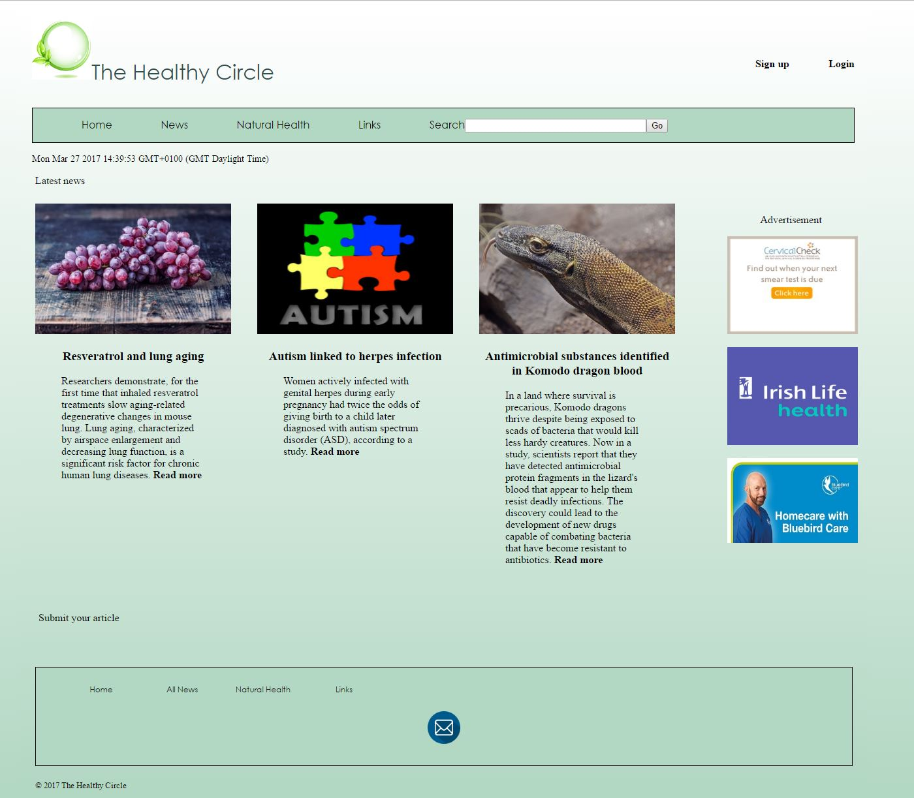

Creative Multimedia Programming - Joana Roche
Creative Multimedia - Web Design
This page displays my Web Design projects for Web Development/ Evolving Web Technologies and Final Year Project from the Creative Multimedia Programming course.
Creative Multimedia Programming - Web Development
Crafted Christmas Website

Creative Multimedia Programming - Evolving Web Technologies
The Healthy Circle Website

Creative Multimedia Programming - Final Year Project
The Write Club Website


Links
Creative Multimedia - Joana Roche blog
Portfolio Behance - Joana Roche
Creative Multimedia Clonmel - Facebook